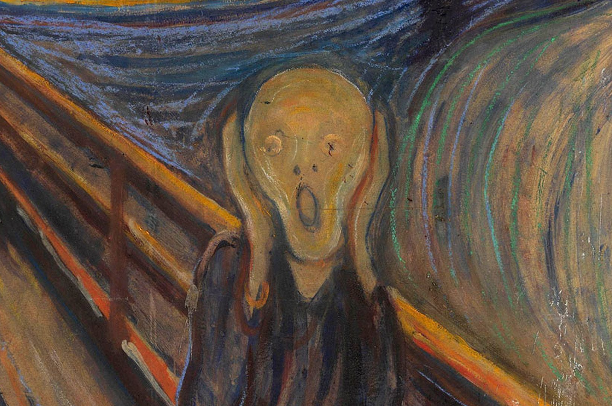

Kenzo Sutarwan - Minggu, 27 Agustus 2023
The Scream depicts someone who is gripped or experiencing anxiety, with a red twilight as the background of the horizon. Interestingly, some researchers believe that the red twilight was seen after the eruption of Mount Krakatau in 1883. In an entry in his diary, Munch admitted that he got inspiration from this painting while walking.
Two versions of The Scream were stolen, but both were eventually recovered. Then on May 2, 2012, a pastel version of The Scream painting was sold for IDR 1.079 trillion in an auction at Sotheby's auction house, New York.